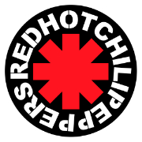

O Red Hot Chilli Peppers é uma banda formada em 1983, em Los Angeles, que revolucionou o rock ao misturar funk, punk e rap em um som energético e original. A formação clássica contou com Anthony Kiedis (vocal), Flea (baixo), John Frusciante (guitarra) e Chad Smith (bateria).
O grande sucesso mundial veio nos anos 1990, especialmente com o álbum Blood Sugar Sex Magik, que consolidou a identidade da banda. Ao longo das décadas, eles lançaram discos marcantes como Californication e By the Way, conquistando milhões de fãs e diversos prêmios.
Eles são considerados uma das maiores bandas da história do rock por sua longevidade, inovação musical, performances intensas ao vivo e influência em diversas gerações de artistas.